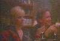

"Fatal Attraction", featuring Ellen Foley...
oh! and Michael Douglas and Glenn Close.
"Fatal Attraction", 1987, 115 minutes, colour.
 After a gap of approx. 4 mins 30 secs, First scene featuring Ellen Foley as "Hildy" at a book launch party. You should
have no trouble spotting her in the red dress. Also at the party are Hildy's husband Jimmy (Stuart Pankin) and their
friends, Dan Gallager (Michael Douglas) and his wife Beth (Anne Archer). It is at this party that Dan and Alex (Glenn
Close) first meet. Duration 3 min 35 secs.
After a gap of approx. 4 mins 30 secs, First scene featuring Ellen Foley as "Hildy" at a book launch party. You should
have no trouble spotting her in the red dress. Also at the party are Hildy's husband Jimmy (Stuart Pankin) and their
friends, Dan Gallager (Michael Douglas) and his wife Beth (Anne Archer). It is at this party that Dan and Alex (Glenn
Close) first meet. Duration 3 min 35 secs.
After a gap of approx. 40 mins 50 secs during which Dan and Alex have a weekend fling, Dan ends the affair but Alex will NOT
be scorned; second scene featuring Hildy (Ellen), with Jimmy, Dan and Beth relaxing at the bowling alley. Duration 1
min 4 secs. Alex's obsession with Dan increases.

After a gap of approx 3 mins 30 secs, third scene with Jimmy and Hildy having dinner with Dan and Beth at their home. This
dinner with friends is a happy time which serves to counterpoint the terror that is to come when Alex's obsessive acts take
a major turn for the worse. This would be Ellen's biggest scene in the film. Duration 4 mins 33 secs.

Later, "mad woman" Alex continues her terrifying obsession, cooking the Gallager's pet rabbit and taking Dan and Beth's child
on a roller coaster ride behind their backs. Beth crashes the car due to worry. Dan half throttles Alex. Alex invades their
home and absent-mindedly nicks bits off her leg as she waves a large knife around. Dan only half drowns Alex and so Beth
finally shoots her dead. A happy ending at last.
What's that? You didn't see much of Hildy... Mrs Jimmy......(Michael Douglas)'s mate's wife (Ellen Foley)? Well we
have a saying here in the Ellen Foley Film and Television section.
Go back to the start of Ellen Foley Information.
 After a gap of approx. 4 mins 30 secs, First scene featuring Ellen Foley as "Hildy" at a book launch party. You should
have no trouble spotting her in the red dress. Also at the party are Hildy's husband Jimmy (Stuart Pankin) and their
friends, Dan Gallager (Michael Douglas) and his wife Beth (Anne Archer). It is at this party that Dan and Alex (Glenn
Close) first meet. Duration 3 min 35 secs.
After a gap of approx. 4 mins 30 secs, First scene featuring Ellen Foley as "Hildy" at a book launch party. You should
have no trouble spotting her in the red dress. Also at the party are Hildy's husband Jimmy (Stuart Pankin) and their
friends, Dan Gallager (Michael Douglas) and his wife Beth (Anne Archer). It is at this party that Dan and Alex (Glenn
Close) first meet. Duration 3 min 35 secs.
{kind=link}
{kind=link}